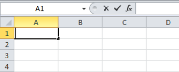
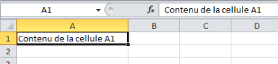
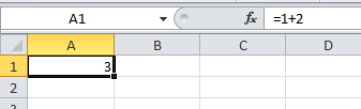
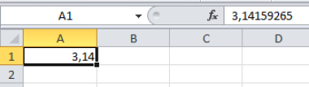

La barre de formule
La zone de nom
Pour savoir dans quelle cellule nous sommes en train de travailler, Excel numérote chaque ligne à partir de 1 et nomme chaque colonne par une lettre à partir de A.
Donc, dans l'exemple ci-dessus la zone de nom indique A1, nous avons sélectionné la cellule qui se situe à l'intersection de la colonne A et de la ligne 1. C'est la première cellule tout en haut à gauche d'une feuille de calcul.
Les boutons de la barre de formule
Lorsque j'édite une cellule en faisant un double-clic à l'intérieur de celle-ci je rentre en mode édition et je peux voir apparaître deux boutons : "Annuler" et "Entrer" qui me permettent d'annuler le mode édition à l'aide de la croix ou bien de valider ce que j'ai encodé en appuyant sur le V.
Nous pouvons encore remarquer la présence d'un bouton intitulé fx, il s'agit du bouton "Fonction" et vous permet d'accéder à la liste de fonctions disponibles avec Excel.

La zone de contenu
La troisième zone de la barre de formule présente le contenu réel de la cellule sélectionnée.
Ici, nous avons encodé du texte, la zone de contenu nous indique également le même texte.

Mais attention, lorsque vous encodez une formule dans la cellule, celle-ci va afficher le résultat et non pas la formule.
Qu'est-ce que cela signfie ? Observez un peu la capture d'écran suivante :

Nous avons changé le contenu de la cellule A1 par la formule =1+2, cela indique logiquement que nous souhaitons réaliser l'addition de 1 et 2. Le résultat est bien égal à 3. Vous remarquerez que le résultat apparaît dans la cellule et que la formule apparaît dans la zone contenu de la barre de formules.
Fondamental :
Le résultat affiché dans une cellule ne correspond pas forcément à la valeur réelle de la cellule. Il faut y être attentif lorsque vous changez l'affichage d'une cellule avec des nombres décimaux par exemple. La valeur affichée peut être 3,14 alors que la valeur réelle est 3,14159265. Excel réalisera tout calcul avec la valeur réelle !
